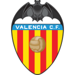

2026-09-15 赛事量化归档
时间:
类型:
赛事:
AI置信度:低
✘
叻武里
4-6
(0-3)
上海海港
AI置信度:中
✔
大田市民
1-0
(0-0)
AI置信度:高
✔
卡塔尔23
1-4
(0-3)
韩国23
AI置信度:高
✘
柔佛
1-1
(1-1)
布里兰
AI置信度:中
✔
北京国安
3-1
(2-1)
浦项
AI置信度:高
✘
艾因
4-0
(1-0)
AI置信度:低
✔
2-1
(2-0)
AI置信度:高
✘
0-1
(0-0)

巴伦西亚AI置信度:高
✔
5-1
(2-0)
威廉二世
AI置信度:高
✘
米堡
2-2
(0-2)
米尔沃尔
AI置信度:高
✔
3-1
(1-0)
热刺
AI置信度:高
✔
2-4
(0-2)
AI置信度:高
✔
2-3
(0-2)
皇马
AI置信度:低
✔
普拉滕斯
2-1
(2-0)
弗鲁米嫩